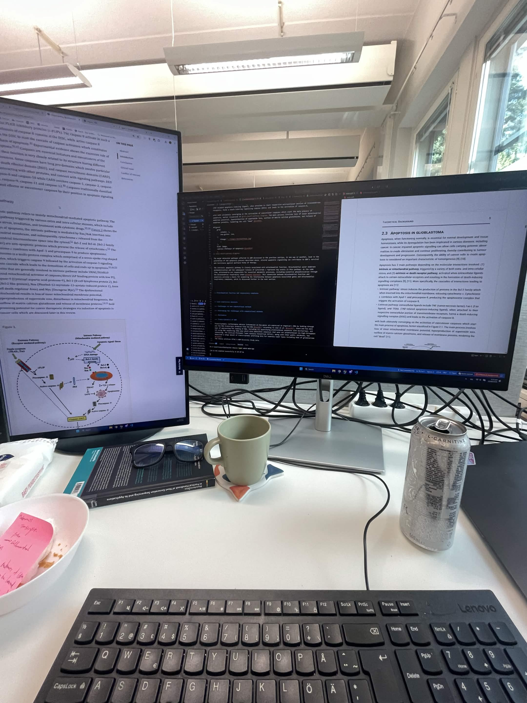
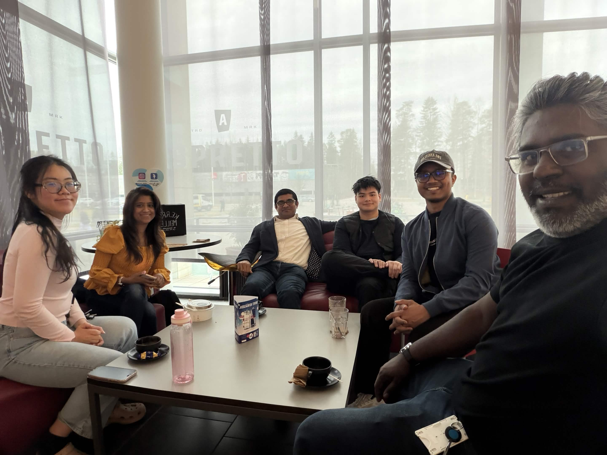
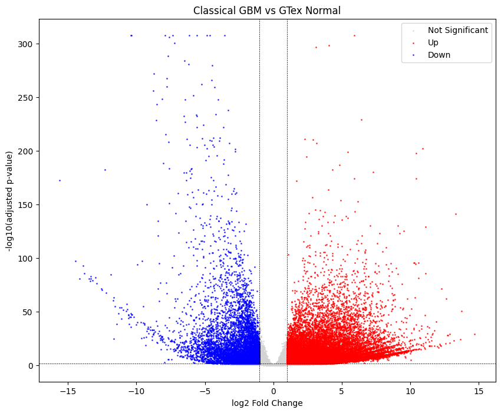
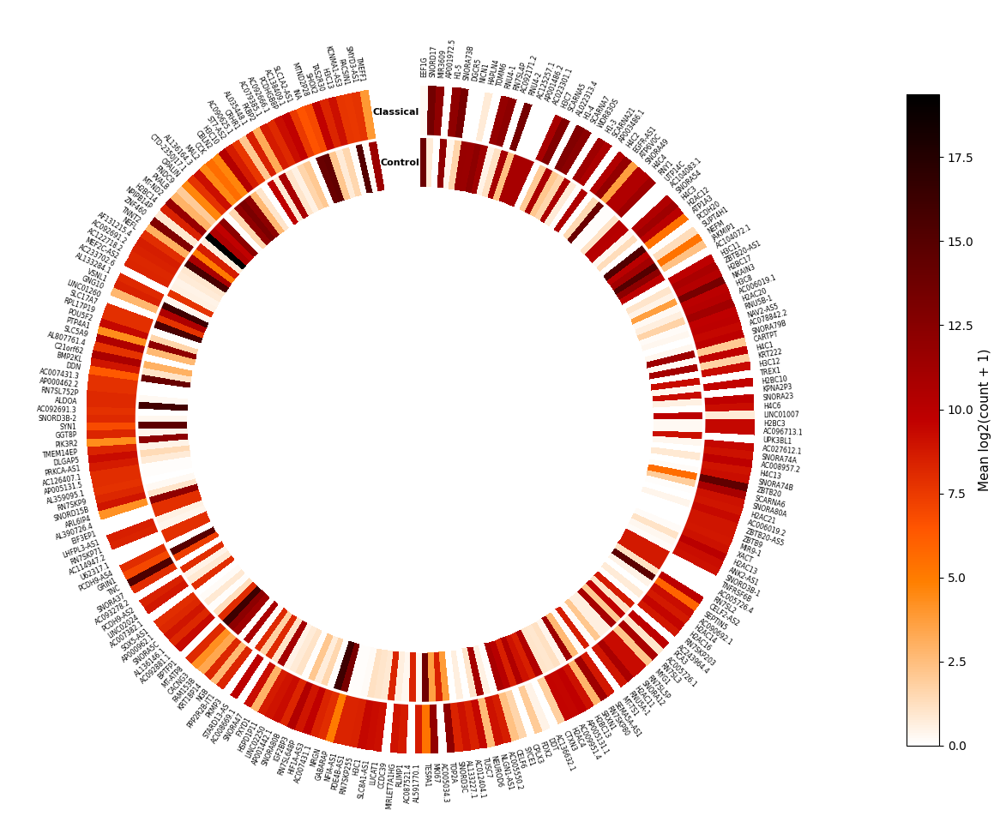
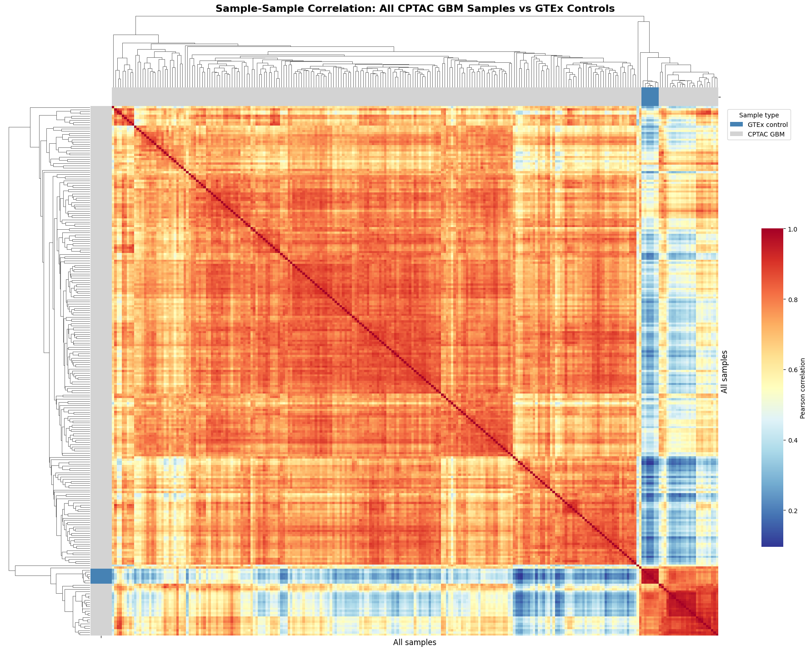

Bioinformatics Research Assistant
Computational analysis of glioblastoma transcriptomic data, using Python to investigate molecular differences across tumor subtypes and disease states.
My work involves processing and standardizing large-scale gene-expression datasets, differential expression analysis, and downstream pathway and protein-interaction analysis. I developed a modular Python workflow to make the analysis reproducible and allow different datasets and analysis methods to be integrated more easily.
99 CPTAC GBM samples · 10 GTEx controls · 55,000+ genes · 28,000+ significant DEGs





